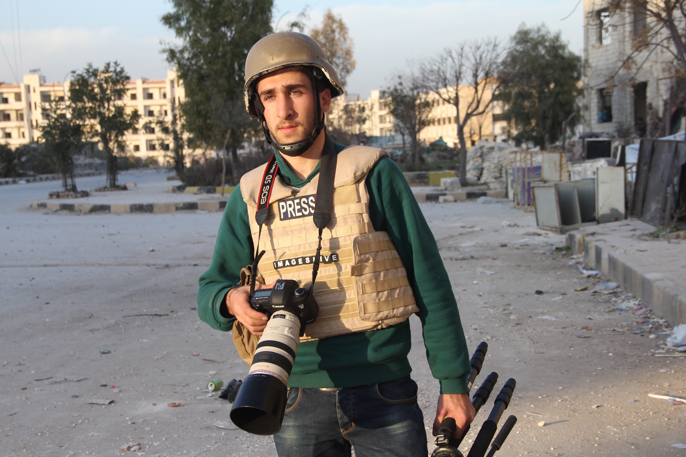

Director-General deplores death of journalist Osama Jumaa in Syria

The Director-General of UNESCO, Irina Bokova, today denounced the killing of journalist Osama Jumaa in the city of Aleppo on 5 June.
“I condemn the killing of Osama Jumaa,” the Director-General said. “I call on all parties in the conflict to respect the Geneva Conventions on the civilian status of journalists and their right to exercise their profession.” Jumaa was killed when artillery fire hit an ambulance in which he was being
treated for injuries sustained while covering the bombing of a residential neighbourhood of Aleppo. Jumaa had been working for Images Live, a British photo agency. The Director-General of UNESCO issues
statements on the killing of media workers in line with Resolution 29 adopted by UNESCO Member States at the Organization’s General Conference of 1997, entitled “Condemnation of Violence against Journalists.”
Reporters Without Borders
 Reporters without Borders (RSF) is saddened to learn of 19-year-old Syrian press photographer Osama Jumaa’s death in the northern city of Aleppo on 5 June and deplores the
fact that the violence of the conflict in Syria makes it impossible for journalists to work safely.
Reporters without Borders (RSF) is saddened to learn of 19-year-old Syrian press photographer Osama Jumaa’s death in the northern city of Aleppo on 5 June and deplores the
fact that the violence of the conflict in Syria makes it impossible for journalists to work safely.
Arab Centre for the Freedom of the Press
The Arab Centre for the Freedom of the Press mourns the death of Syrian journalist Osama Jumaa, who has passed away as a result of air strikes on the Syrian city of Aleppo. The Arab Centre for the Freedom of the Press has said in a statement that Osama Jumaa was one of the most important journalists to have devoted himself to professional work, and to have dedicated his life to provide the truth in many places and
in serious journalistic tasks. Osama’s most recent coverage was that of the Syrian Revolution, as well as the tragedy suffered by the Syrian people. The Centre has called for the United Nations and UNESCO to open an investigation about the death of journalist Osama Jumaa and to punish those responsible for his death, which must be considered an extremely serious war crime. The Arab Centre for the Freedom of the Press and the Media has called for the Federation of Arab Journalists, to set up the day Osama was killed as ‘the
Arab Press Day’, and to celebrate the day every year. Osama Jumaa passed away as a result of air raids on the city of Aleppo, while he was inside the ambulance, which was used to save the wounded and injured in Al-Mashad and Al-Zubdya neighbourhoods in the city of Aleppo after the town had witnessed heavy shelling in the morning.
The Arab Union of Photographers:
The Arab Union of Photographers denounces the crime carried out against the Syrian photographer and journalist Osama Jumaa who died while undertaking his sacred duty during his coverage of the events in his country. The Union of Arab Photographers upholds its denunciation and condemnation of all such acts to which photographers and journalists are exposed to in Syria and in all the Arab countries; but the Union maintain hope that all the concerned authorities will provide all the necessary conditions for the protection of ‘the messengers of the image and of the word’ as well as the defence of their lives, since they stand as the symbol of free, honest, and committed journalism.
Tina Lozio of International Photo Media/Images Live:
 “It is a real tragedy that we have lost a journalist of such deep integrity, impartiality and dedication. Osama was clearly a real precious gem, shining light on all people around him both in the professional and personal spheres. The tragic loss of
Osama won’t be felt only by his family, friends, IPM/Images Live, and Osama’s news readers. Syria itself has lost a very capable, honest and reliable citizen, who should have played a fundamental role in the rebuilding of the country once the conflict had ended.”
“It is a real tragedy that we have lost a journalist of such deep integrity, impartiality and dedication. Osama was clearly a real precious gem, shining light on all people around him both in the professional and personal spheres. The tragic loss of
Osama won’t be felt only by his family, friends, IPM/Images Live, and Osama’s news readers. Syria itself has lost a very capable, honest and reliable citizen, who should have played a fundamental role in the rebuilding of the country once the conflict had ended.”
Images Live Statement
Osama Jumaa has been killed in Aleppo
London, UK, 5th June 2016. Osama Jumaa has been killed after being hit by bombardments caused by artillery fire launched by the Syrian government in the district of Al-Mashad in Aleppo. Osama had gone to that neighbourhood to film the rescue of people trapped under the rubble following the bombardments. Just as the ambulance in which Osama was travelling had reached the site, the vehicle was hit by artillery fire and Osama was injured. As the driver, himself a
paramedic, attempted to rescue Osama, they were both hit by artillery fire and both Osama and the driver lost their life. We announce the news with our deepest sorrow. Osama was an extremely brave, independent, impartial young journalist with deep integrity and great humanity. Osama had trained in Turkey in journalism and photography with Images Live. Medyan Dairieh had known Osama’s family from the inception of
the Syrian revolution and was hosted by them whenever he went to Syria to cover the situation there. Osama’s entire family has always been extremely hospitable and kind to Medyan. Unlike many other Syrian youngsters and young men during the Syrian Revolution, Osama has kept himself separate from all the
warring factions maintaining an impartial approach to the conflict that was reflected in his impartiality and great professionalism as a journalist. Osama trained in Turkey in journalism, photography, as well as in the production of documentaries with Images Live. Osama was also trained on the ground in Syria by Medyan Dairieh. The teaching had focused greatly on the necessity of impartiality, independence, and integrity of the journalist in reporting the news. It also emphasized the duty of journalists
to show all the parties involved in the conflict, while at the same time to remain objective and not to embrace any particular view. Osama had absorbed with extreme ease these principles of journalism. Unlike many other young Syrians during the Syrian conflict, Osama had not joined any of the warring factions
nor any party or organization in Syria, thus maintaining an unbiased approach to the conflict that was reflected in his impartiality and great professionalism as a journalist.